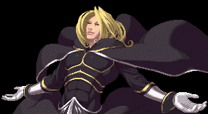
イグニス
＜ボスモード＞
スタートボタン押しながら決定。
・本来のイグニスのように必殺技キャンセルが可能。
・ジャグルチェック無し。
・ゲージ増加量が大幅にアップ。
・ストライカー使用不可。
・使用出来る技が増える。
必殺技
チェーンブレイド・トランスアキシャル・スライス
+X/Y
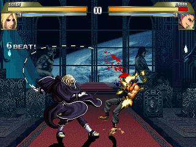
鎖で前方を攻撃。強なら浮かせて
空中追い討ちが可能。
チェーンブレイド・サジタルエッジ・スライス
+X/Y
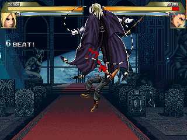
対空技。無敵時間あり。
ネガ・ジェネシス
+A/B
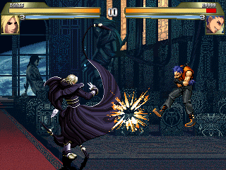
モーションはふっ飛ばしとほぼ同じ。
1発目がヒットすると吹っ飛んではね返る。
追い討ち可能。飛び道具を跳ね返す。高速弾。
ヴォイド･ジェノサイド
+A/B
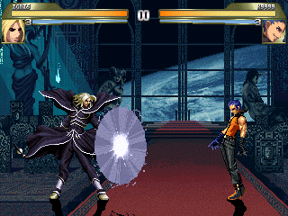
当て身技。ダークバリヤではない。
使い道は微妙。
ディバインアロー・エア
+X
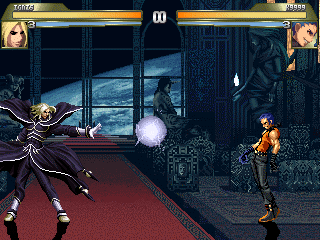
速い飛び道具。位置も高く隙も無い。
ディバインアロー・グランド
+Y
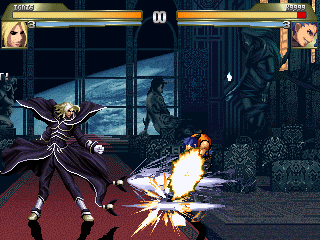
下段飛び道具。なかなか使える。
超必殺技
ケイオス・タイド
+A/B （ゲージ1000消費）
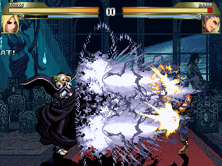
前方にドデカイ飛び道具を出す。
端までは届かず、密着だと当たらないキャラも。
イーディアンブレイド
+X/Y （ゲージ1000消費）
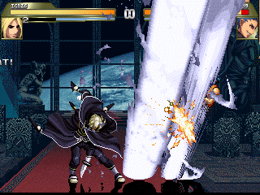
火柱を連続で発射。ヒット数は状況によって変わる。
白羅滅精
ボスモード時+X/Y（ゲージ1000消費）
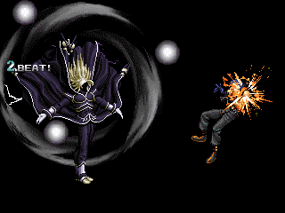
ボスモード専用技。
これぞネスツ闇の支配者の白羅滅精。
彼にとってはブラックホールなど朝飯前。
性能はゼロ達と同じ。これ以上高性能はマズイから。
ブルータル・ゴッド・プロジェクト
+XY(Z) （ゲージ2000消費）
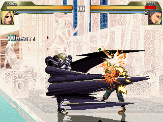
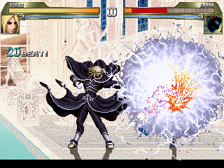
凄まじい乱舞技。発生はただの突進技。
非常に威力が高い。
エンド･オブ･ガイア
+XY(Z) （ゲージ2000消費）
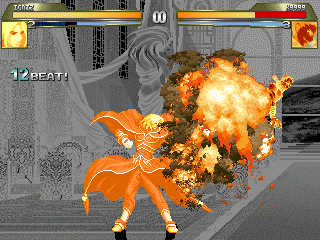
ネスツ闇の支配者なら火炎を操る事など楽勝。
突進まで完全無敵。もちろんクリザリッドより高性能。
愛と服従のツープラトン
相手の近くで+AB(C)（ゲージ2000消費）
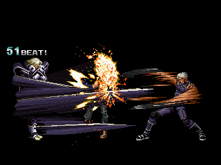
コマンド投げ。投げ間合いは広い。
変な技・・・。ラストは微妙。こんなはずじゃ・・・。
ブリリアント・イグニス・プロジェクト
ライフが300以下で+XY(Z) （ゲージ2000消費）
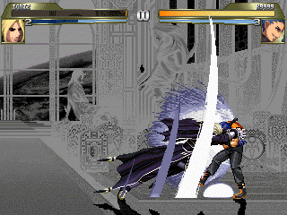

無理心中。ガードされても外してもイグニスは死ぬ。
お互いに生存率は1％。
ストライカー
首切り破沙羅
A+Y
影舞い・酬
影舞い・夢彈
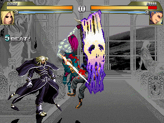
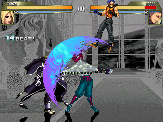
画面後から飛んできて乱舞をかます。
ゲージの消費は無し。
修羅か羅刹かはランダム。両方共に追い討ち可能。
修羅の方は演出に問題有り。